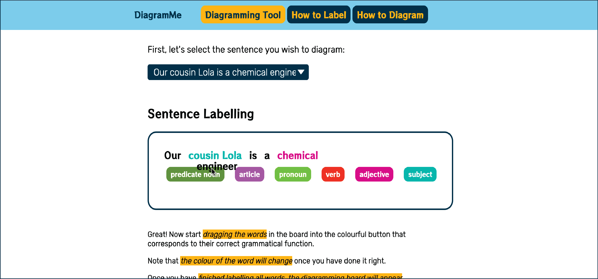

How to Label Words
If you are just starting to learn about diagramming sentences, labelling the words in a sentence is the first
and a very important step to take.
Labelling Words References
If you want to
learn about all about the functions of each word, you can
research online or download this pdf from Central Texas College:
Grammar Analysis
How to Label Words on DiagramMe
1 - The first thing you will need is a sentence to work with, you can
select a
sentence clicking on the dropdown menu as shown on the image below.
2 - After selecting, a board will appear with the selected sentence and colourful buttons with different
grammatical labels.
3 - The words are detached from each other. You can
start dragging the word into the
colourful button that corresponds to its correct grammatical label. When the word changes to the
colour of a button, it means that you chose the right label.

4 - When
all the words in the sentence change their colours, the page will
refresh and it means you completed labelling your sentence! Well Done! Now it's time to learn
How to Diagram
using this website.
How to Diagram
If you are here, it means you already know how to label a sentence, if you don't, don't worry, check here
How to Label
Sentence Diagram References
In case you need a refresher on what word to put on top of certain line and how to connect lines, have a look
online, or check this
Reference Sheet
How to Diagram Sentences on DiagramMe
When you have your sentence labelled and colourful on the top of a white board, and yellow buttons on the
left, it's time to
start dragging those yellow buttons into the board to create
lines to draw your diagram.
-> You can
rotate the lines and the words to expand your diagramming options.
Once you select the element you want to rotate, it will highlight itself, click on the "Rotate" button, bellow
the board.
You can rotate a line multiple times.
You can rotate a word once and rotate it back to its start angle.
-> You can
delete the lines you won't use, by selecting the line, once it is
highlighted in yellow simply click on the "Delete Line" button, beside the "Rotate" button.
-> Finally, you can
save your diagram into your computer by clicking on the
"Save Diagram" button beside the "Rotate" button.